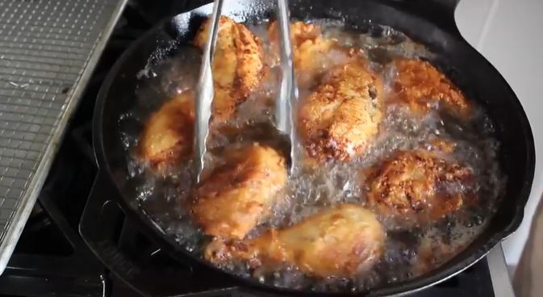

Instructions
-
Chicken Prep
In a Large Bowl
1. Season chicken generously with salt and pepper.
2. Cover with plastic wrap and let chill in fridge for 3 hours or up to overnight
-
Wet Mix Prep
In Shallow Bowl
3. Add 2 cups milk.
4. Add 3 eggs.
5. Add 1 tbsp hot sauce.
6. Whisk wet bowl.
-

Dry Mix Prep
In Shallow Bowl
7. Add 2 cups of flour.
8. Add 2 tsp paprika.
9. Add 1 tsp cayenne.
10. Mix dry bowl.
-
Chicken

11. Pat chicken dry.
12. Dredge Chicken in flour (dry) mixture.
13. Dip in milk (wet) mixture.
14. Re-dredge in flour (dry) mixture.
15. Place on wire-rack-lined baking sheet.
In Large Pot
16. Heat oil until candy thermometer inserted into pot reads 350°.
17. In batches, fry chicken (until golden) about 6-8 minutes.
18. Scoop out 1/2 cup of hot oil from pot into pyrex measuring cup.
(Let remaining oil cool before discarding)
-
Spicy Oil

In large bowl
19. Add 4 tbsp cayenne pepper.
20. Add 2 tbsp brown sugar.
21. Add 1 tbsp of paprika.
22. Add 1 tsp garlic powder.
23. Add 1 tsp chili powder.
24. Add 1 tsp kosher salt.
25. Mix bowl.
26. Pour the reserved 1/2 cup of hot frying oil from Chicken.
27. Whisk bowl thoroughly.
28. Pour spicy oil over chicken before serving.
(optional)
Place over white bread and dress with sliced pickles for true Nashville Style